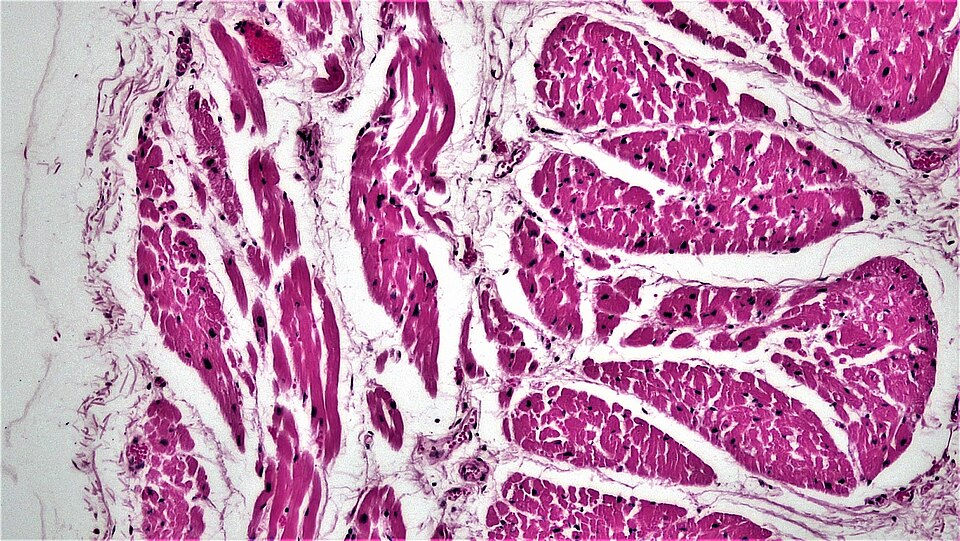
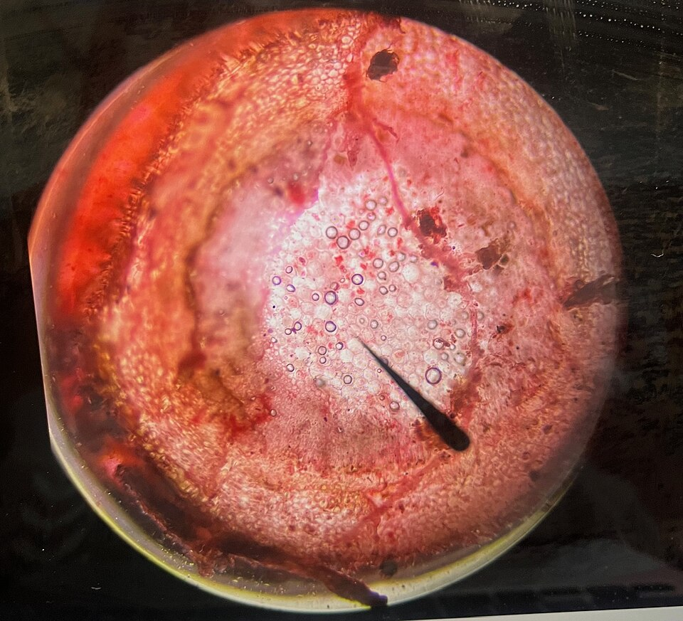
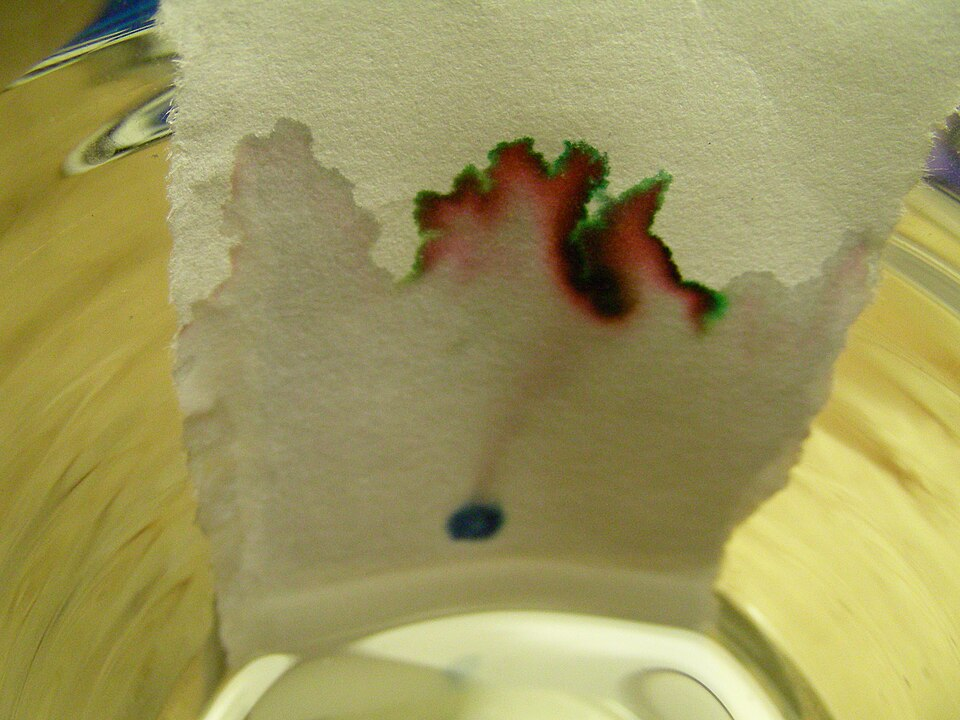

Six lessons, four live labs and a shuffled practice exam. Revise the whole of Exam 1: life processes, tissues, cells, organ systems, mixtures, evaporation, distillation and chromatography.
What does it mean to be alive, and which organs keep you going?
The 8 life processes (MRS C GREN): tap a card to flip it
Something is alive only if it carries out all of these. Moving, growing or being warm is not enough on its own.
Exam trap: photosynthesis is NOT one of the eight
Photosynthesis is how a plant makes its food, which is part of Nutrition. Respiration is not breathing: it is the chemical process in cells that releases energy from food. Sort these ideas:
Organs: a group of tissues doing one job
Human organs
Heart: pumps blood around the body
Lungs: take in oxygen from the air
Brain: controls thoughts and body functions (and body temperature)
Liver: removes toxins from the blood
Stomach: digests food
Plant organs
Roots: absorb water from the soil
Leaves: carry out photosynthesis
Plants do have organs. Roots and leaves are each made of several tissues working together.
Match the organ to its job
2
Animal & Plant Tissues
Similar cells working together build the organs.
Tissue
Found in
Job
Muscle
Animals
Helps movement
Nervous
Animals
Sends messages to and from the brain
Epithelial
Animals
Covers and protects (skin, linings)
Connective
Animals
Gives structure and support (bone, tendons, blood)
Xylem
Plants
Transports water up the plant
Phloem
Plants
Transports food (sugars)
Root hair tissue
Plants
Absorbs water from the soil

Muscle tissue under the microscope: long bundles of fibres that contract to cause movement.

Plant tissues: a slice through a stem. Xylem and phloem tubes run in bundles like these.
Spot the tissue! Tissue or organ?
Which tissues make which organ?
An organ is made of more than one tissue. Match each organ to its tissues.
Build a full-mark answer
5-mark answer builder
“Explain how tissues, organs and organ systems are connected. Use examples from animals and plants.”
Tap every statement you would put in a full-mark answer, then check.
3
Cells & Organ Systems
Cells make tissues, tissues make organs, organs make systems.
In BOTH plant and animal cells
Nucleus: controls the cell
Cell membrane: controls what enters and exits
Cytoplasm: where chemical reactions happen
Mitochondria: release energy (respiration)
ONLY in plant cells
Cell wall: strengthens and supports the cell
Chloroplasts: use sunlight for photosynthesis
Large vacuole: stores water and nutrients, helps shape
Chromatography separates a mixture of coloured substances (dyes).
Stationary phase = the paper.
Mobile phase = the solvent that moves up the paper.
The finished paper is a chromatogram.
Why the colours separate
Different dyes have different solubility. A dye that is more soluble dissolves in the solvent and travels further up the paper. A less soluble dye is left behind.
Black ink is not one dye. It contains multiple dyes.

A real chromatogram: the ink has separated into different dyes as the solvent travelled up the paper.
Which dye goes furthest?
Build a full-mark answer
5-mark answer builder
“Describe how chromatography works and give two real-life uses. Why does it separate mixtures?”
Tap every statement you would put in a full-mark answer, then check.
Lab
Live Labs
Four hands-on labs. Everything moves, and every lab works with the keyboard.
Lab 1 · Lesson 4
Dissolve Lab
Add a solute to the water. Does it dissolve? Can you speed it up? Can you get it back out?
Pure water
Dissolved0
Undissolved0
Add some salt. Then try stirring and warming the water.
Lab 2 · Lesson 5
Distillation Lab
Heat salty water. Compare evaporation (water escapes) with distillation (water is collected).
Method: distillation
Water collected0
Water lost to air0
Salt left behind0
Light the burner. In distillation the vapour is cooled in the condenser and collected.
Lab 3 · Lesson 6
Chromatography Lab
Run the ink up the paper, watch the dyes separate, then solve a forensic case.
Pick an ink
Dyes found
Start the solvent to see which dyes are in the ink.
Lab 4 · Lesson 3
Cell Builder
Pick a cell type, then add its parts. Wrong parts bounce back.
Pick a part
Tap a part to try adding it to the cell.
Cell complete0/0
Tip: only plant cells have a cell wall, chloroplasts and a large vacuole.
Play
Bonus Game: Lab Bench Rush
Real photos ride the conveyor belt. Send each one to the right separation method. About two minutes, no lives.
Filtration, evaporation, distillation, sieving, magnet or chromatography? Read the situation on each card, then press the matching button (or keys 1 to 6) before it reaches the yellow gate. This bonus round is optional and does not count towards any mark.